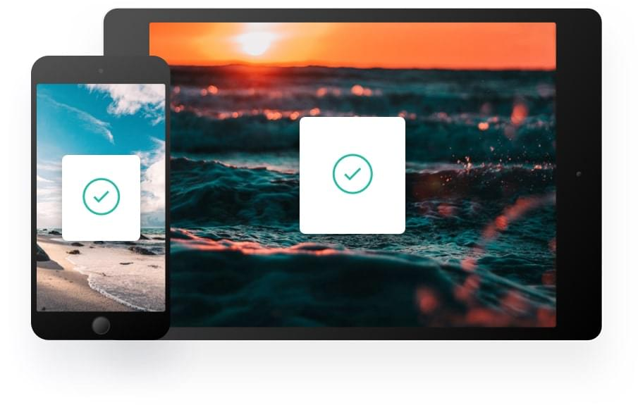

Create blacklists
Ensure sensitive information never makes its way to your clipboard by excluding certain sources.
Clipboard allows you to track and organize everything you copy. Instantly access your clipboard on all your devices.
Clipboard instantly stores any item you copy in the cloud, meaning you can access your snippets immediately on all your devices. Our Mac and iOS apps will help you organize everything.
Easily search your snippets by content, category, web address, application, and more.
Instantly saves and syncs snippets across all your devices.
Retrieve any snippets from the first moment you started using the app.
Whether you’re on the go, or at your computer, you can access all your Clipboard snippets in a few simple clicks.
We’ve got the tools to boost your productivity.
Ensure sensitive information never makes its way to your clipboard by excluding certain sources.
Remove unwanted formatting from copied text for a consistent look.
Quick preview of all snippets on your Clipboard for easy access.
Available for free on the App Store. Download for Mac or iOS, sync with iCloud and you’re ready to start adding to your clipboard.